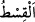
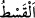
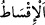
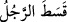
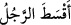
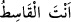
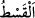
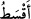
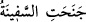
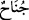
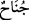

Peygamber Zeyd’i muhayyer bıraktı. Ancak Zeyd, Rasûlullah (s.a.)’i tercih etti.
Rasûlullah (s.a.) de Zeydi âzâd etti. Onu kendi çocuğu gibi yetiştirdi ve evlâd
edinmeyle ilgili vahiy gelmeden önce onu evlâdlık edindi. Onu Hamza b. Abdülmuttalib
ile kardeş yaptı. O, Zeyd b. Muhammed diye çağrılırdı. Aynı şekilde Mikdâd b. Amr el-
Behrânî’ye Mikdâd b. Esved, Ebû Huzeyfe’nin âzâdlısı olan Sâlim ise Sâlim b. Ebû
Huzeyfe diye çağrılırdı. Bunlar gibi daha başka birçok evlâdlık durumunda bulunanlar
hep babalıklarına nispet edilerek çağrılırdı. Sahîh-i Buhârî’de Hz. Ömer’den şöyle
nakledilmiştir: “Biz sadece Zeyd b. Muhammed (Muhammed’in oğlu Zeyd) diyorduk.
Derken bu âyet geldi. Biz de ona Zeyd b. Hârise (Hârise’nin oğlu Zeyd) demeye
başladık.”[161]
Mânâ şöyledir: Evlâdlıklarınızı onları dünyâya getiren anne ve babalarına nisbet edin
ve Zeyd Hârise deyin. Diğerlerini de aynı şekilde söyleyin.
“Allah yanında en doğrusu budur” Yâni evlâdlıkları babalarına nisbet ederek
çağırmaktır.
“__WORD__ adâlet demektir. “__WORD__ ise başkasının nasibini/payını almaktır ki bu bir
haksızlıktır. “__WORD__ başkasının hissesini/payını vermektir ki bu bir adâlettir. Bu yüzden
kişi zulmettiğinde “__WORD__, âdil davrandığında ise “__WORD__ denir.
Hikâye edildiğine göre bir kadın Haccâc’a “__WORD__ dedi. Bunun üzerine Haccâc
kadını cezâlandırdı ve “Sen ancak haksızlığı (__WORD__) kastettin.” dedi.
“__WORD__ kelimesi ism-i tafdil olup onunla mutlak ziyadelik kastedilmiştir. Adâlet ve
doğrulukta üstün ve ileri olan demektir. Keşfü’l-esrâr’da şöyle denilmiştir:
“Evlâdlıkları babalarına nisbet ederek çağırmanız başkalarına nisbet ederek
çağırmanızdan daha âdil ve daha doğrudur.”
“Eğer babalarının kim olduğunu bilmiyorsanız” tanımıyorsanız “bu takdirde
onları” onlardan müslüman olanları “dîn kardeşleriniz ve” dinde “görüp gözettiğiniz
kimseler olarak kabul edin” Yâni onları din kardeşliği ve din dostluğu ile çağırın. Din
kardeşliği ve dostluğu mânâsında: “Bu benim din kardeşim, bu benim dinde dostumdur”
deyin. İşte bu da onları görüp gözetmekten ve muhabbetten ileri gelir. Bazıları şöyle
demiştir: “Onlara “kardeş” diye hitab ediniz. Eğer âzâd etmişseniz “Mevlâ” (dost,
efendi) diye hitap ediniz.” Şu husus da buna delildir: Ebû Huzeyfe, Salim isimli
kölesini âzâd edip onu evlâdlık edindi. Daha önce geçtiği üzere ona Sâlim b. Ebû
Huzeyfe diyorlardı. Bu âyet nâzil olunca ona “Ebû Huzeyfe’nin âzâdlısı Sâlim” dediler.
“Yanılarak” yâni yasaklamadan önce ya da sonra dil sürçmesiyle veya unutmak
sûretiyle hata ederek “yaptığınızda size vebal” yâni günah “yok,”
“__WORD__ gemi iki yanından birine eğildi/yan yattı demektir. İnsanı haktan meyl
ettiren günaha “__WORD__ adı verilmiştir. Sonra ise ger günaha “__WORD__ adı verilmiştir.
Bâzıları “__WORD__ kelimesinin, ibdâl konusunda Arapların âdetine uygun olarak günah
kelimesinden Arapçalaştırıldığını söylemişlerdir. Gevher kelimesinden Arapça’ya